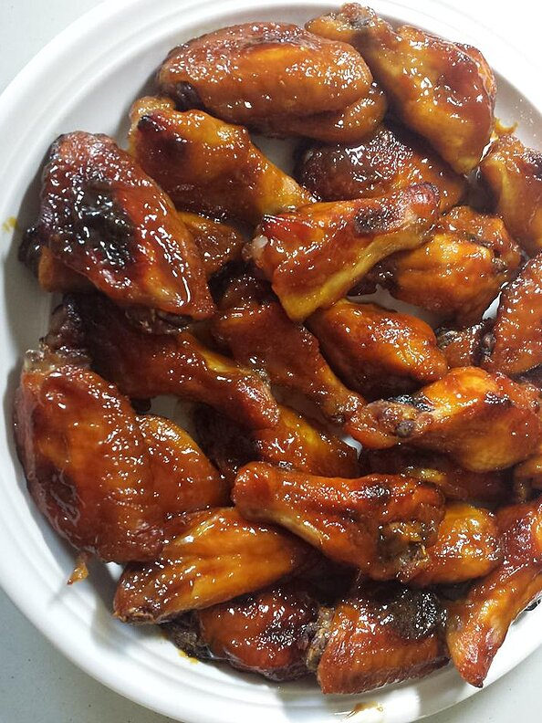

Amazing and Easy Chicken Wings

Ingredients
- 2 cups brown sugar
- 1 cup yellow mustard
- ¼ cup soy sauce
- 5 pounds chicken wings, cut into thirds and tips discarded
Directions
- Mix brown sugar, mustard, and soy sauce together in a bowl. Measure 1/4 cup marinade for basting and transfer to a small bowl; cover and refrigerate.
- Place wings in a large resealable bag. Pour remaining marinade over wings, coating well. Seal and marinate wings at least 2 hours and up to overnight.
- Preheat oven to 375 degrees F (190 degrees C).
- Remove chicken wings from resealable bag and transfer to a baking sheet. Discard marinade.
- Bake in the preheated oven for 30 minutes. Baste wings with reserved 1/4 cup marinade; cook, basting every 10 minutes, until chicken is no longer pink in the center, about 30 more minutes.